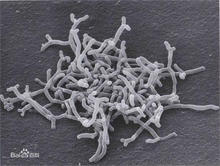

双歧杆菌

来源：早在1899年，法国巴斯德研究所的儿科医生Henry Tissier从母乳喂养的健康婴儿的粪便中分离出的一种厌氧的革兰氏阳性杆菌，当时命名为Bacillus bifidus。
成果：《中国微生态学杂志》
功效：葡萄糖酸钙、L-乳酸钙、柠檬酸钙酪蛋白磷酸肽、乳糖、柠檬酸、蔗糖甜橙粉（橙香精、麦芽糊精、变性淀粉、 浓缩橙汁）
来源：早在1899年，法国巴斯德研究所的儿科医生Henry Tissier从母乳喂养的健康婴儿的粪便中分离出的一种厌氧的革兰氏阳性杆菌，当时命名为Bacillus bifidus。
成果：《中国微生态学杂志》
功效：葡萄糖酸钙、L-乳酸钙、柠檬酸钙酪蛋白磷酸肽、乳糖、柠檬酸、蔗糖甜橙粉（橙香精、麦芽糊精、变性淀粉、 浓缩橙汁）